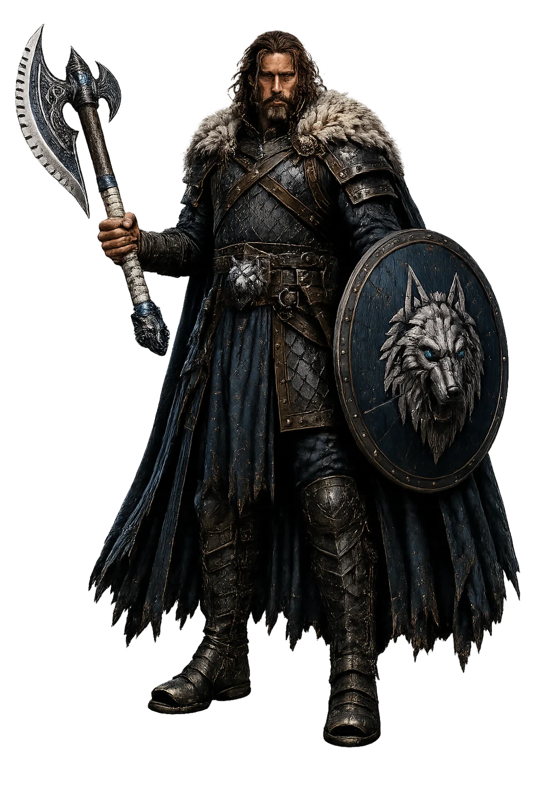
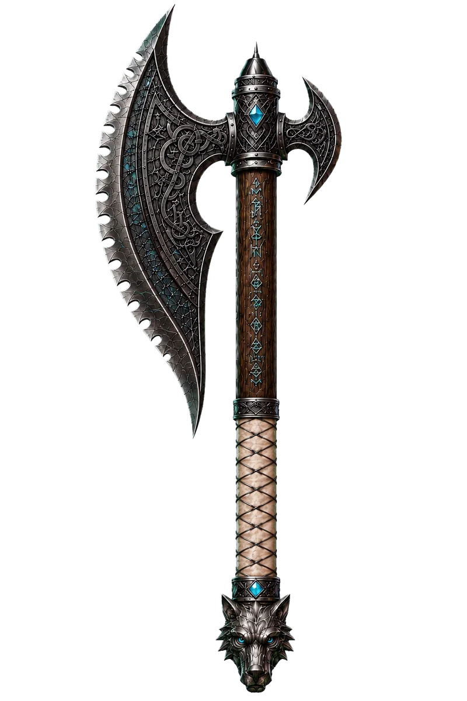
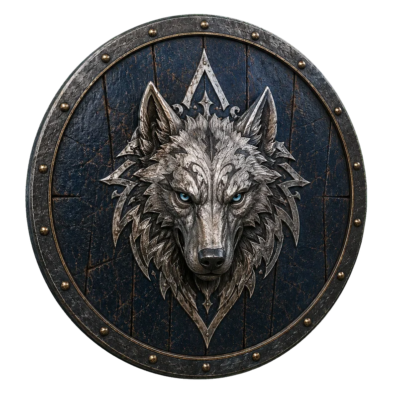
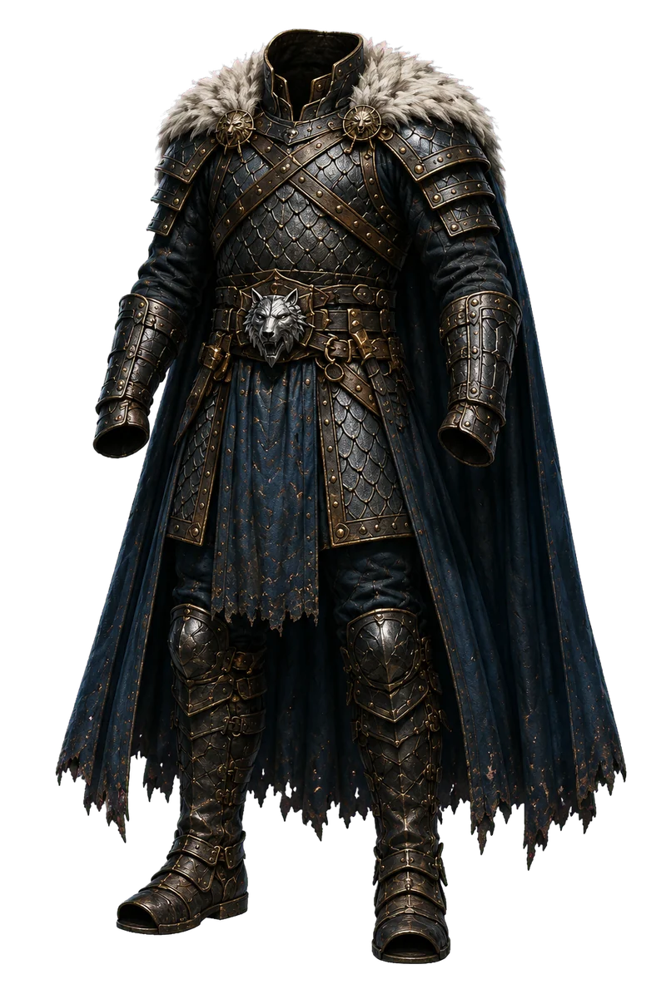

Presa de Lofurin
Machado de guerra de uma mão, assimétrico e ornamentado. Aço negro e prata, inscrições rúnicas no cabo, couro branco na empunhadura, veios azul-gelo discretos e pomo em forma de lobo.

Dungeon World
“O gelo conserva aquilo que merece sobreviver.”
Estrutura idêntica à página 11 do manual de classes — Guerreiro.
Distribua estes valores entre os atributos: 16 (+2), 15 (+1), 13 (+1), 12 (+0), 9 (+0), 8 (−1).
PV máximo é igual a 10 + Constituição. A meta de XP é recalculada automaticamente como nível atual + 7.
Esta é sua arma. Existem muitas iguais a ela, mas esta é sua. Ela é sua melhor amiga, é sua vida. Empunhe-a e seja autêntico.

Sua arma favorita é especial, não apenas um item mundano. A não ser que você realize alguma ação que realmente a coloque em risco, ela jamais será perdida permanentemente.
Preencha pelo menos um dos espaços em branco com o nome de algum companheiro.
me deve sua vida, quer admita isso ou não.
Eu jurei proteger .
Eu me preocupo com a capacidade de de sobreviver dentro das masmorras.
é muito mole, mas o tornarei resistente como eu.
Sua carga é igual a 12+FOR. Você possui sua arma favorita e rações de masmorra (5 usos, peso 1).
As três peças canônicas mantêm a mesma linguagem visual: aço negro, ouro branco, azul profundo e a heráldica do lobo.
Machado de guerra de uma mão, assimétrico e ornamentado. Aço negro e prata, inscrições rúnicas no cabo, couro branco na empunhadura, veios azul-gelo discretos e pomo em forma de lobo.

Escudo circular de madeira azul-marinho, aro de ferro escurecido, rebites de bronze e cabeça de lobo em alto-relevo com olhos azul-gelo. +1 armadura, peso 2.

Armadura pesada de escamas e placas negras, bronze envelhecido, pele clara nos ombros, capa azul-marinho e insígnias do lobo. Armadura 2, peso 3.
Ao ganhar um nível entre 2 e 5, escolha um movimento da coluna esquerda. Ao ganhar um nível entre 6 e 10, escolha um da coluna direita — ou qualquer um ainda não escolhido da coluna 2–5.
A saga em quatro atos.
Kael foi encontrado recém-nascido além da Grande Muralha, protegido por um lobo branco colossal. Ragnar o acolheu como filho de Winterfell.
Treinado em combate, disciplina e dever, tornou-se um campeão cuja força existe para proteger os vulneráveis.
Ao salvar uma patrulha e resgatar Eira, recebeu a Presa de Lofurin e passou de guerreiro a figura profética.
Seu maior medo não é morrer, mas falhar com Winterfell e com a pessoa que jurou proteger.
Profecia
Sacerdotisa de Lofurin e intérprete dos sinais.
Lealdade
Batedora de Winterfell, aliada e elo humano de Kael.
Conflito
Leão Dourado de Solari, rival e possível aliado.
Lugares-chave: Winterfell · Grande Muralha · Santuário de Lofurin · Campo da Profecia · Solari.